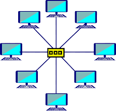

Topologia magistrali (szyny) (ang. bus topology) – wszystkie elementy sieci podłączone są do jednej magistrali. Obecnie stosowana do łączenia urządzeń w topologii punkt-punkt (ang. point-to-point topology)
Liniowa
Topologia liniowa (ang. linear bus topology) – odmiana topologii magistrali, w której każdy element sieci (oprócz granicznych) połączony jest dokładnie z dwoma sąsiadującymi elementami.
Pierscien
Topologia pierścienia (ang. ring topology) – poszczególne elementy są połączone ze sobą w taki sposób jak w topologii liniowej, a dodatkowo połączone zostały elementy graniczne tworząc zamknięty pierścień.

Więcej o topologiach!